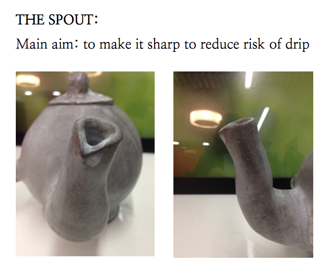

Below is a more detailed account of each feature, followed by an evaluation of how well it went, with references to the Modelling and Analysis section.
If I were improve the existing design failures as well as to further refine the features that work correctly, I believe that it would be highly beneficial for the project if the final prototype undertakes the design process once again (Appendix G contains a diagram of the design process). Allowing this final prototype to be further modelled, tested against new, alternative 3D models as well as further, more expanded and refined modelling techniques, will lead to both a significant improvement in the design and a refinement of the thought process behind it.
Although there are still fundamental aspects of my design to be developed and improved, I believe that I have gone a long way particularly in defining and redefining the concept behind my teapot. The brief of this project was to create the perfect teapot. By scrutinising the design process, my peers and I were taught how to use design to solve a problem, how to define and justify my our design idea to then turn it into a working prototype and ultimately into a real, touchable and marketable product that fits the user and solves a problem. On the one hand, I feel like I may have focused more on the conceptualisation and less on the functionality of my teapot than what was required. This led to a temporary imbalance between solving a problem and creating a physical embodiment of the abstraction that is ‘the social aspect of tea’.
Nevertheless, on the other hand I believe that in the middle of the abstraction I have found a design worth developing, and I feel that my final product demonstrates this. In terms of its strengths, I think I have implemented a number of features that have successfully worked in the final prototype, such as the handle, the split-teapot design, and to a lesser extent, one of the spouts and the concept behind the lid. In contrast, the main weakness of this project may be that some of the design evaluation criteria are somewhat vague in that they are open to interpretation from the user. Personally, I believe that this final prototype is, on the whole, easy to use — but this is an opinion and thus a subjective evaluation of the final design to an extent.
Having said that, the fact that I have been able to come up with solutions to further improve the least successful design evaluation criteria without difficulty leads me to think that I have a good understanding of the strengths and limitations of my design, and this hopefully has been reflected when creating a narrative between the different stages of the design process outlined in this report.
The final prototype has successfully met a total of three out of five design evaluation criteria, thereby showing that the design of this teapot has developed a large amount and, although there are still aspects of it to be developed, overall it suggests that the teapot design that has been presented in this teapot can succeed and further developing into The Perfect Teapot.
And if it doesn't work out, there's always a gap in the market waiting to be filled...